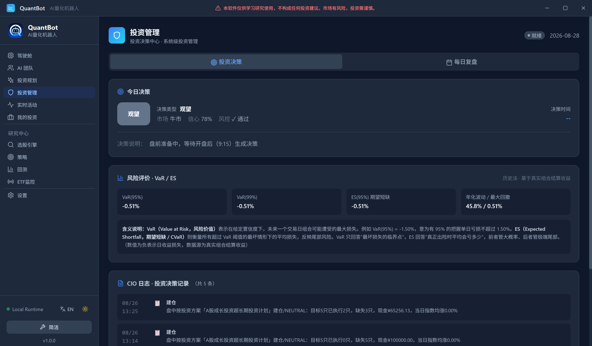

第二十八章读懂决策：CIO 决策中心里的每一行字
28.1一行字，十二个信息
九月十一日下午三点多，我打开 AI 决策页，屏幕上有一行字长这样：决策日志里的一条真实排版
BUY｜信心 72｜风控审批 \(\checkmark\) 通过｜仓位系数 0.06｜Kelly 仓位 ×0.78｜辩论：方向看多 · 共识 61%｜净多 12%｜来源
proposal=+,skeptic=CAUTION,debate=+,regime=-
28.2先读“病历首页”，不读结论
你去医院看一份病历，首页上有一栏一栏：主诉、现病史、查体、辅助检查、诊断、处理、签名。
一个受过训练的医生读病历，不会先看“诊断”那一行。他会先看主诉和查体，再回头看诊断——因为诊断是可以写错的，而查体和检查数据是当时真实发生的。
更关键的是最后一栏：签名。没有签名，前面写得再漂亮，这份病历也只是一张纸。
- 风控审批——这是唯一能一票否决的环节，先看它；
- 仓位系数——这是六维判势给的“限速”，它决定了这个买入到底有多大；
- 证据链——主张、异议、辩论、集成，谁说了什么、谁反对了什么；
- 归因——为什么最后定成这个数。

28.3第一块：这张页面的两个 Tab
页面标题写着“投资管理 · 投资决策中心 · 系统级投资管理”，右上角是运行状态徽章，一共四种：- 运行中（绿点）：CIO 正在工作；
- 已暂停：被暂停；
- 紧急停止（红色）：紧急停止开关已按下；
- 就绪：既没在跑，也没被停——通常是非交易时段。
28.4第二块：市场六维判势卡片
这是第 第十九章 章那个算法在界面上的样子。卡片右上角有一行小字写着数据日期——这一行字非常重要，因为判势结果是有日期的，它不是“此刻”，而是“某个交易日”。 卡片上有四个格子：| 格子 | 字段 | 怎么读 |
| 市场标签 | market_tag | 强势 / 结构性震荡 / 偏弱 / 退潮风险；这是仓位系数的分档名 |
| 仓位系数 | position_rate | 显示为 \(\times 0.55\) 这样的形式；买入金额要乘这个数 |
| 修正总分 | adjusted_total_score | 括号里同时给出“原始”分（raw_total_score），两者不一致说明发生了冲突修正 |
| 矛盾维度 | conflict_count | 达到 2 就触发八折；这个数字越大，市场越自相矛盾 |
前端 ui/src/pages/CIO.tsx 的六维卡片区块；字段名对应 market_sixdim_daily 的列；核对时间 2026-09-24。
28.5第三块：今日决策卡片
再往下是当天那条决策。它有五个要紧的位置：- 决策类型：
BUY/SELL/HOLD/NO_ACTION之类的枚举，中文映射后显示； - 风控审批：三种状态——\(\checkmark\) 通过（绿）、\(\times\) 否决（红）、审核中（黄）；
- 决策原因：一句话，是这条决策最直接的“主诉”；
- 市场状态：牛市 / 熊市 / 震荡市，以及信心指数（一个百分比）；
- 时间戳：这条最容易被误读。
关于时间戳的一条实现决定（节选自
ui/src/pages/CIO.tsx 的注释）
“盘前 (9:15 前) 或休市时不应显示‘已完成决策’的时间戳，避免误导；无真实决策时一律不显示时间戳（显示
--），避免把当前时间误当决策完成时间。”
NO_ACTION，原因写着“盘前准备中，等待开盘后（9:15）生成决策”或“当前休市，等待下一交易日”。
“什么都不做”在这里是一个有名字的、可见的结果。这条设计和第一部分第 第三章 章那个 NOActionCode 是同一件事：不给“什么都没做”留一个名字，系统就只能编一个动作出来。
28.6第四块：证据链——决策日志里的五行
这一块是整页的核心。 决策日志（页面上标为“CIO 日志 · 投资决策记录”）按时间倒序排列，默认展示最近 3 天的分页。每条记录展开后，会给出最多五块证据。我把它们的标签和含义列成表 表 28.2。| 标签 | 字段前缀 | 它记录了哪一步 |
| 【LLM主张】 | market_direction、confidence、suggested_position_rate、effective_position_rate、preferred_stocks、feedback | 主张官的方向判断、信心、它想要多少仓位，以及最终生效仓位（低于主张时会标“已趋保守”） |
| 【异议评审】 | skeptic_verdict、skeptic_concerns | 质疑者的结论与具体担忧点 |
| 【多空辩论】 | debate.direction、agreement、bull[]、bear[]、kelly_position_scale | 辩出来的方向、共识度、多空论据，以及 Kelly 缩放倍数 |
| 【多提案集成】 | ensemble.direction、net_score、votes | 四个来源投票后的净多分，以及每个来源投了什么 |
| 【LLM复议】 | llmReview.action、score、reason、suggestion | 一次带打分的复盘意见 |
五块标签在界面上的顺序就是上表顺序，也是决策实际发生的顺序（主张 → 异议 → 辩论 → 集成 → 复议）。
前端 ui/src/pages/CIO.tsx 决策日志渲染区块；字段名对应 CIODecision.Evidence；核对时间 2026-09-24。
effective_position_rate 旁边的“（已趋保守）”。
界面上是这样拼这一句的：先显示主张仓位，再显示生效仓位；只要生效仓位小于主张仓位，就在后面跟四个字——“已趋保守”。
这是一个非常小的界面细节，但它把第一部分整整三章的内容（Kelly 缩放、集成投票、只降不升）压缩成了四个字。你不需要记得 \(0.4+0.6\times\text{certainty}\)，你只需要看到“已趋保守”，就知道AI 想要的比规则给的少。
反过来，如果生效仓位等于主张仓位，那就不打这个标签——因为那说明没有任何一环把它压下来。这两种情况在界面上长得不一样，而它们背后的含义完全不同。
第二处：【多提案集成】里那个 votes。
它以 key=value 的形式把每个来源的投票直接摊开，例如：
ui/src/pages/CIO.tsx）来源 proposal=+, skeptic=CAUTION, debate=+, regime=-proposal=+、debate=+），一个谨慎（skeptic=CAUTION），一个偏空（regime=-）。净多分是这四票按各自权重折算出来的结果。它不隐藏任何一票——包括那个和结论相反的 regime=-。
这是“可解释性”这个词在这里的确切含义：不是事后写一段理由，而是把当时投出的每一票原样留下来。原因很简单——一段事后撰写的解释，无论多流畅，都不携带信息；而一票一票的原始记录，是可以被复核、被统计、被追责的。
28.7第五块：每日复盘 Tab
切到第二个 Tab，画面上是一条复盘记录。它有四块内容。 （一）状态与四个关键指标。状态是“已完成”或“进行中”。四个指标是：总资产、今日盈亏、今日收益率、持仓数量。注意“今日盈亏”的颜色约定——盈利红、亏损绿，这是 A 股的习惯，和欧美正好相反（见第 第二十三章 章的制度约定）。 （二）市场状态。牛市 / 熊市 / 震荡市，加上信心指数百分比。 （三）首席投资官深度复盘。一段可换行显示的文字，是这条复盘的正文。 （四）各智能体复盘汇总。这一块按五个角色分组：规划师（Planner）、量化分析师（Quant）、风控（Risk）、交易员（Trader）、首席投资官（CIO）。每一组下面挂该角色当天的小结。 第四块是很多人会忽略、但我认为最有价值的一块。它意味着复盘不是“CIO 一个人写总结”，而是五个岗位各交一份自己的作业。如果哪天亏损了，你可以直接去看风控那一栏写了什么——而不是在一段由单一模型生成的总结里猜它有没有替自己开脱。
一份完整体检报告，不同项目后面签着不同科室的名字：血常规是检验科出的，心电图是心功能室出的，结论是主检医师写的。
你不会接受一份“所有项目都由同一个人签字”的体检报告——因为那意味着出错时无人可问。
复盘也是一样：五个角色各签一份，比一份写得很好的总结更有用。
28.8这条决策从哪儿来
最后说一句界面背后的数据来源，因为它决定了“你看到的”是不是“当时发生的”。 系统在这里做过一次收敛：界面上不再单独维护一份“今日决策快照”，所有决策记录统一来自decision_logs 表，页面按时间倒序读它。只有在该表查不到记录时，才用当前市场状态造一条 NO_ACTION 的占位。
这个决定的好处是：你在界面上看到的、和审计日志里查到的、和事后复盘时引用的，是同一条记录。没有第二份可能不一致的副本。
这是本项目里被误解最多的一条，没有之一。
仓位系数 \(0.06\) 的意思是“今天最多只能下 \(6\%\) 的注”，不是“今天要跌”。它是由六维总分映射出来的一个缩放系数，和方向完全无关。
一个很具体的反例：某天判势给 \(0.06\)（退潮风险），选股层照样挑出了三只票，策略层也照样给它们发了买入信号。系统在那天做的事情不是“卖出”，而是把新的买入缩到极小，同时完全放行卖出与止损。
所以正确的读法是：仓位系数低 = 今天不适合开新仓；它既不预测下跌，也不阻止你离场。
“页面上一行写着 BUY，我就买了。”
这件事的问题不在于结论对不对，而在于读的顺序反了。先看到结论之后，人就只会去找支持它的证据，而剩下那些反对的证据会被当成噪音略过——这是所有人都有的倾向，不是你的个人缺陷。
正确的读法是从上往下，而且按页面的原始顺序读：
第一步看风控审批。它是“\(\times\) 否决”还是“审核中”，后面的所有文字都不必读。
第二步看市场六维判势。仓位系数是多少、原始分和修正分差多少。
第三步看证据链的五行。特别注意【多提案集成】的“来源表态”里有没有反方——如果四个来源里有一个是
第二步看市场六维判势。仓位系数是多少、原始分和修正分差多少。
第三步看证据链的五行。特别注意【多提案集成】的“来源表态”里有没有反方——如果四个来源里有一个是
-，那这个决策就是带着分歧做出来的。
走完这三步，你才应该去看那个 BUY。因为到那时你已经知道：这个买入是在什么限速下、带着多少分歧做出的。
- 决策中心页面（两个 Tab、状态徽章、六维卡片、决策日志、每日复盘）：
ui/src/pages/CIO.tsx - 六维判势卡片字段：
market_tag/position_rate/adjusted_total_score/raw_total_score/conflict_count - 证据链五块字段：
CIODecision.Evidence下的market_direction、skeptic_verdict、debate、ensemble、llmReview - 决策记录表：
decision_logs；页面按时间倒序读取，兜底为NO_ACTION占位 - 六个维度的取数与修正：
internal/marketsixdim（见第 第十九章、第二十章 章）
动手试一试（十分钟）
- 打开 AI 决策页。先看右上角的状态徽章是四种里的哪一种，再对照当前时间判断这个状态是否合理。
- 找到【市场六维判势】卡片，把“修正总分”和括号里的“原始”两个数相减。差值不为零时，说说冲突修正打了多少折。
- 往下找今天的决策，检查三件事：决策类型、风控审批状态、决策原因。如果风控审批是“审核中”，到此为止——不必再往下读。
- 展开最近一条决策日志，逐块读那五行证据。重点找两个东西：有没有“（已趋保守）”这四个字？来源表态里有没有
-？ - 切到“每日复盘”Tab，看“各智能体复盘汇总”里五个角色各自写了什么。找出说得最保守的那一份，想想为什么是它。